Enable Hyper-V Using the Windows Features GUI
The most common method is enabling Hyper-V through the built-in GUI utility: Turn Windows features on or off.
Step 1 — Accessing Programs and Features
Accessing Programs and Features from Control Panel.
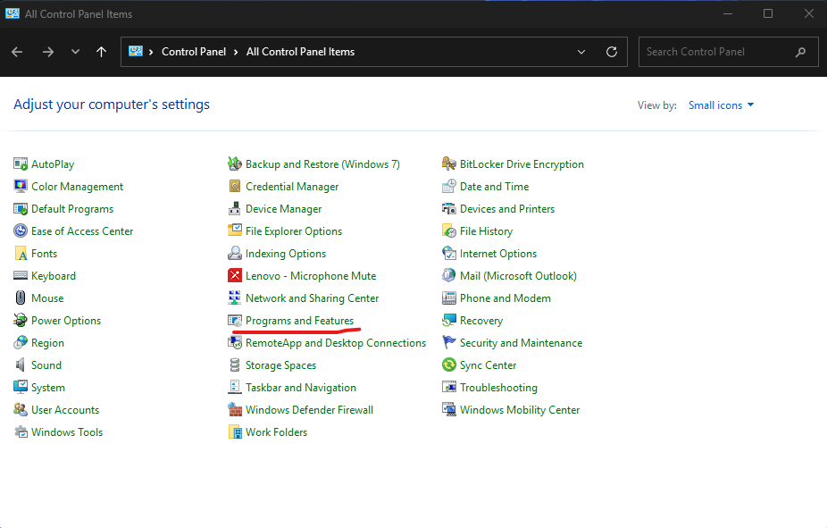
Step 2 — Turn Windows Features On or Off
Click on Turn Windows features on or off in the upper-left.
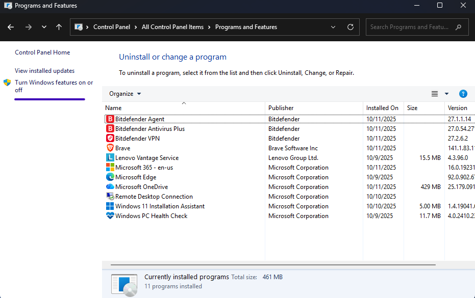
Step 3 — Locating the Hyper-V Feature
Check the Hyper-V checkboxes — Hyper-V Management Tools and Hyper-V Platform — then click OK.
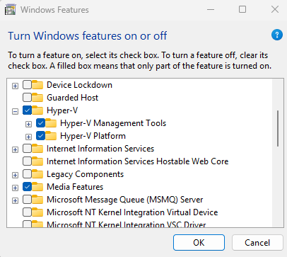
Step 4 — Applying the Requested Changes
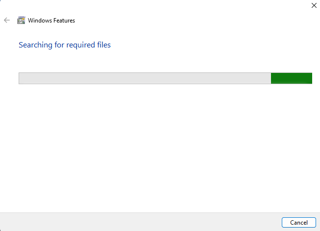
Step 5 — Restart Required to Complete Installation
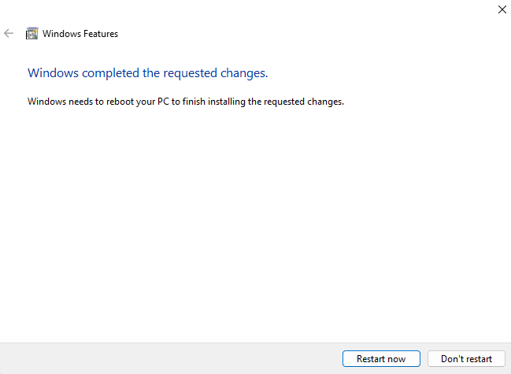
Step 6 — Hyper-V Manager Launched Post Installation
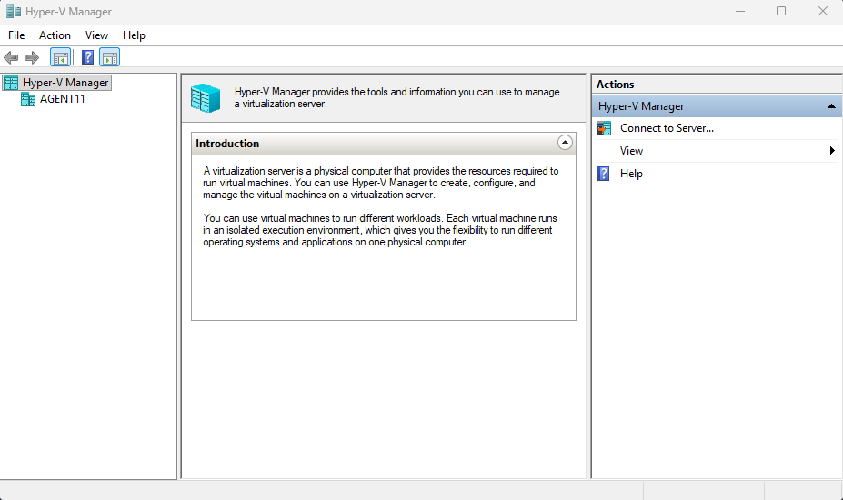
Enable Hyper-V Using PowerShell
PowerShell provides a fast, scriptable way to enable Hyper-V across multiple systems. The required command is:
Enable-WindowsOptionalFeature -Online -FeatureName Microsoft-Hyper-V-All
PowerShell Step 1 — Running the Enable-WindowsOptionalFeature Command
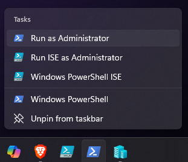
PowerShell Step 2 — Hyper-V Components Installing
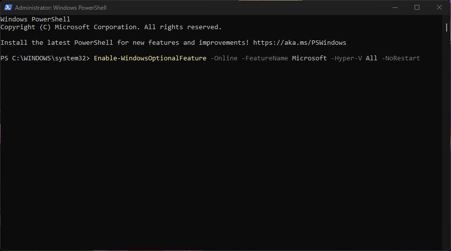
PowerShell Step 3 — Restart Prompt After Installation
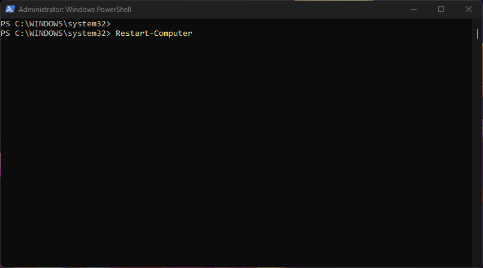
Enable Hyper-V Using DISM
DISM (Deployment Image Servicing and Management) is another command-line method for enabling Windows optional features. This method is commonly used in automation and imaging workflows. The command is:
dism.exe /Online /Enable-Feature /All /FeatureName:Microsoft-Hyper-V
DISM Step 1 — Running DISM to Enable Hyper-V
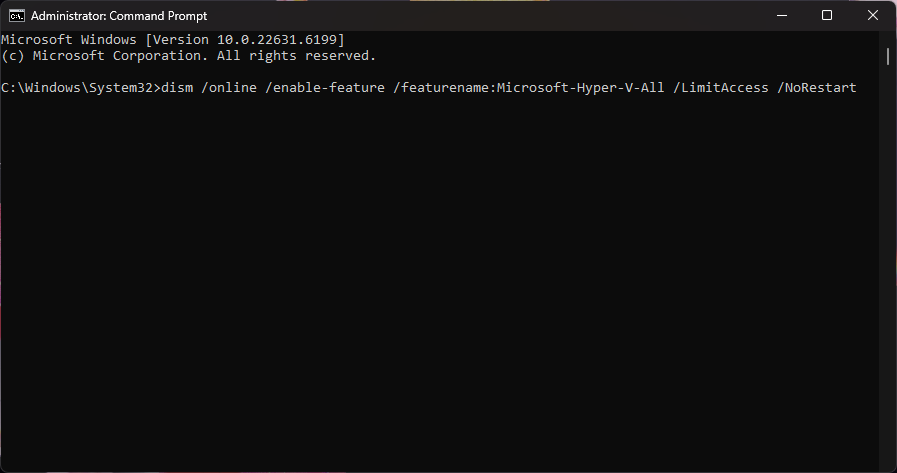
DISM Step 2 — Restart Computer
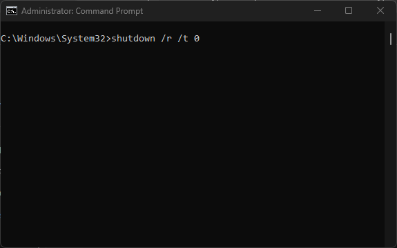